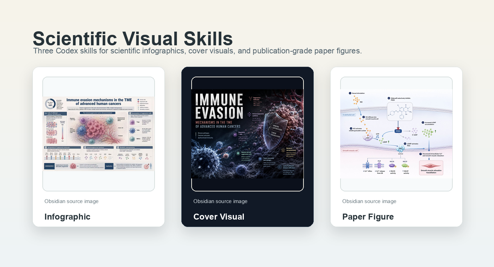
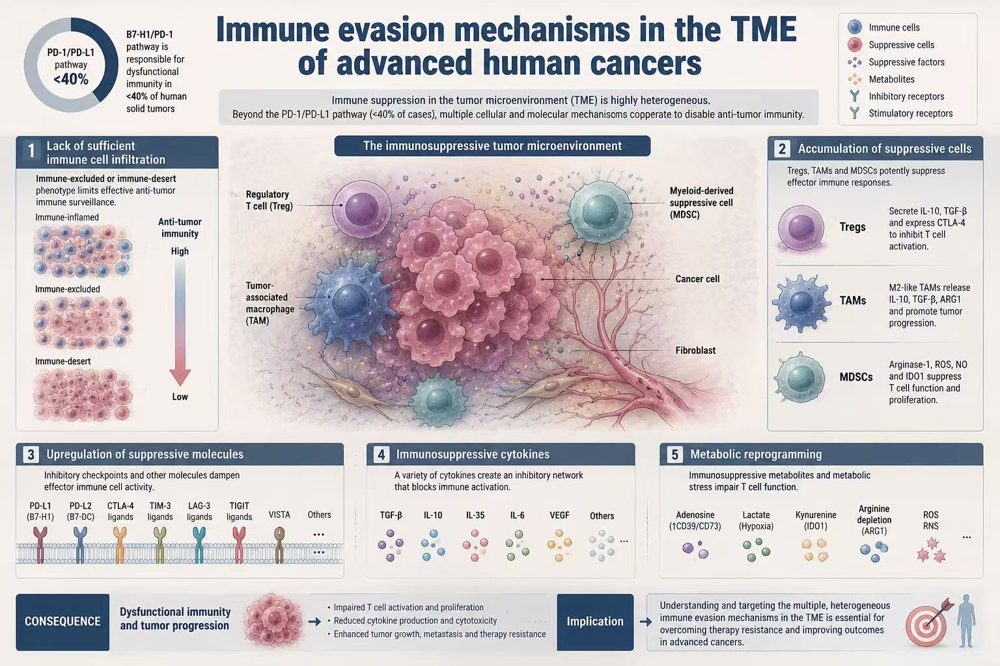
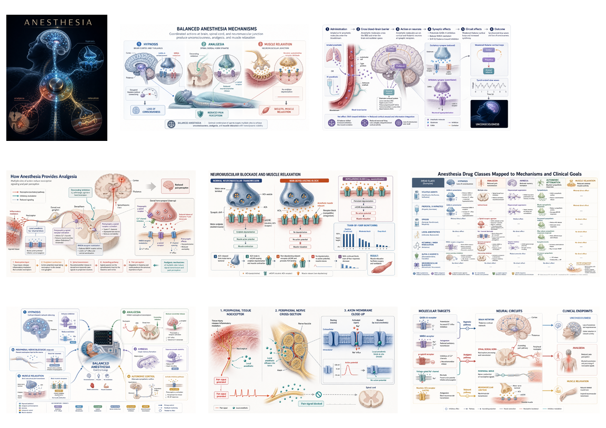
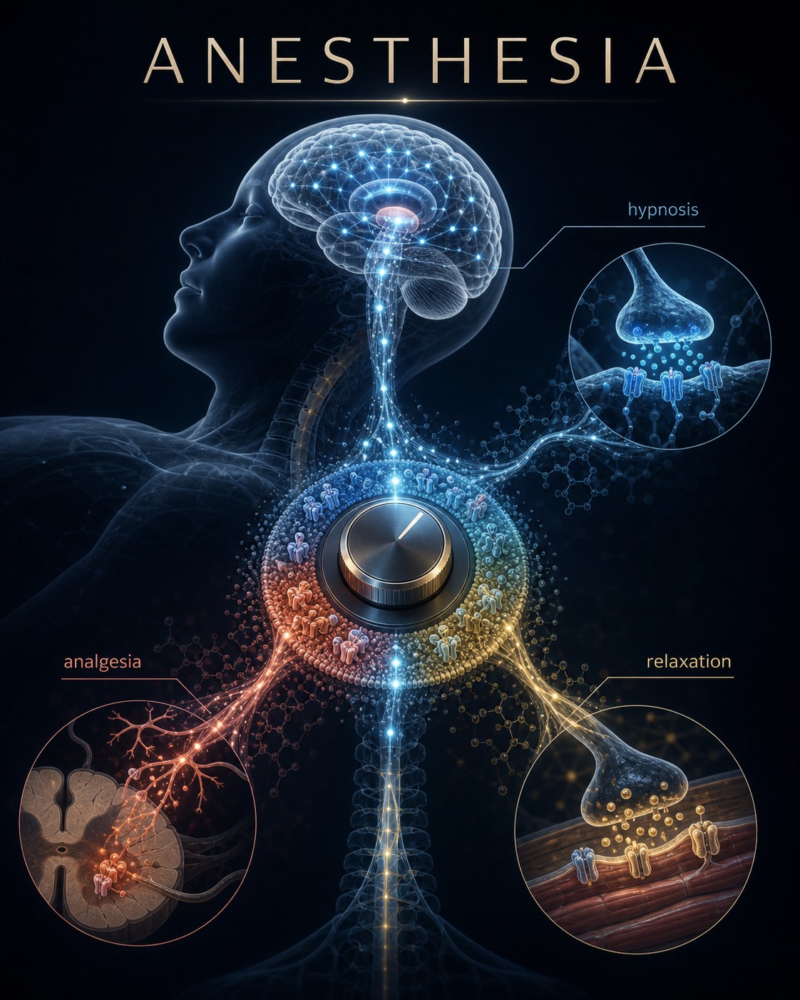
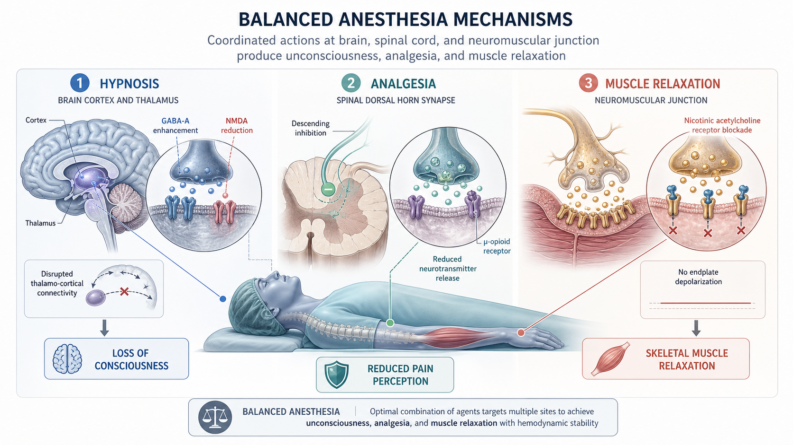
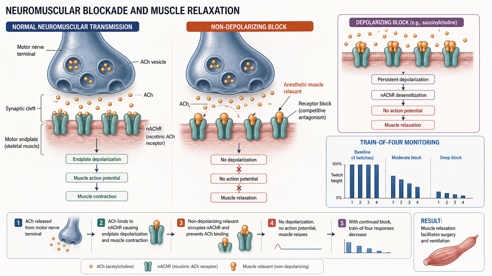
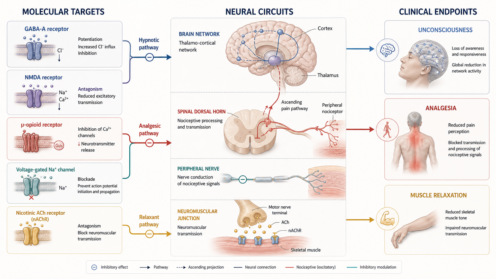

讲清楚：信息图Explain Clearly: Infographic
目标是让读者快速看懂结构。适合综述图、疾病图谱、教学图、分类总结、时间线和流程图。The goal is clarity. Use it for review figures, disease maps, teaching diagrams, classifications, timelines, and workflows.
这节课用 `scientific-visual-skills` 做例子，教你如何选择合适的科研视觉 skill、如何调用它们生成图片，以及如何 fork 这个 GitHub 项目建立自己的专业视觉工具包。 This lesson uses `scientific-visual-skills` to show how to choose the right scientific visual skill, use it to generate images, and fork the GitHub project into your own specialized visual toolkit.

学生最容易混淆的是：科研信息图、科研封面、论文机制图看起来都叫“科研图”，但目标完全不同。 Students often confuse the three: infographic, cover visual, and paper figure all sound like scientific images, but they optimize for different goals.
目标是让读者快速看懂结构。适合综述图、疾病图谱、教学图、分类总结、时间线和流程图。The goal is clarity. Use it for review figures, disease maps, teaching diagrams, classifications, timelines, and workflows.
目标是把研究主题变成一个有记忆点的主视觉。适合封面、PPT 首页、公众号封面和科研海报。The goal is a memorable focal concept. Use it for cover-style visuals, presentation covers, article covers, and academic posters.
目标是准确表达输入、过程和输出。适合 Graphical Abstract、作用机制图、解剖图、实验流程和手术步骤图。The goal is mechanism accuracy. Use it for graphical abstracts, mechanism diagrams, anatomy figures, workflows, and surgical steps.
它像一个小型科研视觉工作室：三个岗位分工明确，共用一套质量边界和命名规则。 Think of it as a small scientific visual studio: three roles with clear responsibilities, shared quality boundaries, and semantic file naming.

使用方法并不复杂：安装三个目录，然后在 Codex 中点名对应 skill，或者用自然语言描述需求。 The usage is simple: install the three skill folders, then name the right skill in Codex or describe the need in natural language.
把 `skills/` 下的三个目录复制到 `~/.codex/skills/`，然后开启新的 Codex 会话。Copy the three folders under `skills/` into `~/.codex/skills/`, then start a new Codex session.
想讲清楚就用 infographic；想做封面冲击力就用 cover；想讲机制路径就用 paper figure。Use infographic for clarity, cover for visual impact, and paper figure for mechanism paths.
默认规则是：你说“生成图”，skill 就直接调用生图；你明确说“只要 prompt”，才只输出提示词。Default behavior: if you ask for an image, it generates. If you explicitly ask for prompt-only, it returns the prompt.
cp -R skills/scientific-infographic "$HOME/.codex/skills/"
cp -R skills/scientific-cover-visual "$HOME/.codex/skills/"
cp -R skills/scientific-paper-figure "$HOME/.codex/skills/"cp -R skills/scientific-infographic "$HOME/.codex/skills/"
cp -R skills/scientific-cover-visual "$HOME/.codex/skills/"
cp -R skills/scientific-paper-figure "$HOME/.codex/skills/"每个示例都不是让学生背 prompt，而是让学生看懂“输入槽位”：主题、信息点、语言、比例、禁用元素。 Students do not need to memorize prompts. They should learn the input slots: topic, key points, language, aspect ratio, and forbidden elements.
$scientific-infographic
请生成一张科研信息图：
主题是“肿瘤微环境中的免疫逃逸机制”。
内容包括 T 细胞耗竭、PD-1/PD-L1 轴、
Treg、缺氧微环境和免疫治疗干预点。
中文，4:5，Nature 系克制学术配色。$scientific-cover-visual
请生成一张科研封面主视觉：
主题是“纳米药物穿越血脑屏障”。
核心视觉：纳米颗粒穿过半透明屏障，
进入神经网络微环境。
英文短标题，3:4，不要真实期刊 logo。$scientific-paper-figure
请生成一张 Graphical Abstract：
工程化外泌体递送 siRNA 抑制肿瘤生长。
输入：工程化外泌体。
过程：靶向、内吞、释放 siRNA、沉默基因。
输出：肿瘤细胞增殖下降。
把“麻醉药机制”压缩成一个能被记住的主视觉。Compress anesthesia mechanisms into one memorable visual concept.
用信息图把 hypnosis、analgesia、muscle relaxation 三个目标组织起来。Use an infographic to organize hypnosis, analgesia, and muscle relaxation.
用论文插图分别解释催眠、镇痛、肌松、局麻阻滞等路径。Use paper figures to explain hypnosis, analgesia, neuromuscular blockade, and local anesthetic pathways.

强调“记忆点”和视觉冲击，不负责解释所有细节。Optimizes for memory and impact, not full explanation.

把复杂主题整理成清楚的模块，适合课堂和综述。Organizes the topic into clear modules for teaching and review.

重点是起点、过程、结果和箭头方向可信。Focuses on starting point, process, result, and credible arrows.

展示如何把微观机制连接到临床可观察结果，但不提供临床处置建议。Shows how molecular mechanisms connect to observable endpoints without becoming clinical guidance.
最有价值的学习方式，是把它当模板：保留架构，替换领域、规则、案例和质量门槛。 The most valuable way to learn is to treat it as a template: keep the architecture, replace the domain, rules, examples, and quality gates.
先不要重写一切，保留 `skills/ docs/ assets/ examples/` 的结构。Do not rewrite everything first. Keep the `skills/ docs/ assets/ examples/` structure.
例如急诊创伤、护理教学、实验室安全、材料科学或医学科普。For example: trauma education, nursing teaching, lab safety, materials science, or medical communication.
让每个 skill 明确需要哪些输入，什么叫合格，什么叫跑偏。Define what inputs each skill needs, what counts as good, and what counts as drift.
用真实主题生成一组图片，作为 README 和教学展示的证据。Generate images from real topics and use them as README and teaching evidence.
1. Fork scientific-visual-skills。
2. 选择一个你熟悉的领域。
3. 决定是否仍然需要三类 skill：讲清楚 / 做封面 / 讲机制。
4. 修改每个 SKILL.md 的输入槽位、版式策略和禁用元素。
5. 写 3 个 example prompts。
6. 生成一组案例图，放到 assets/。
7. 更新 README：告诉别人如何安装、如何调用、如何判断质量。
8. 发布到 GitHub Pages，让别人直接点开学习。1. Fork scientific-visual-skills.
2. Choose a domain you understand.
3. Decide whether you still need the three skill types: clarity / impact / mechanism.
4. Edit each SKILL.md: input slots, layout strategy, and forbidden elements.
5. Write three example prompts.
6. Generate an example image set and place it under assets/.
7. Update the README: installation, usage, and quality standards.
8. Publish with GitHub Pages so others can open and learn from it.